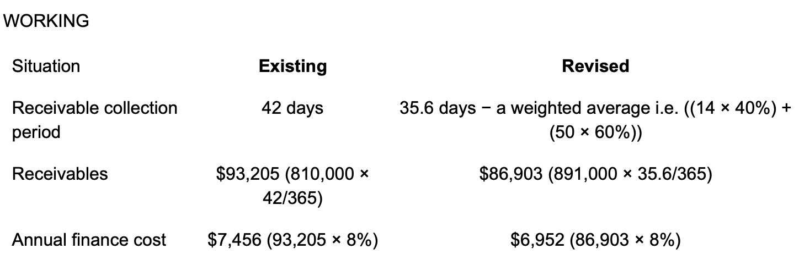

Example 1 A
Example 2 A and B
Example 3 C
Example 4 C
Example 5
ex-div price = 1.83-0.08 = $1.75 per share
dividend yield = (0.06+0.08)/1.75 = 8%
Chapter 2
Example 1
Method 1:
Period return: r = ($9.65m-$9.6m)0.05m/$9.6m =0.52%
Annualize return =0.52% ×365/50 = 3.80%
Method 2:
Period return: r = ($9.65m-$9.6m)0.05m/$9.6m =0.52%
using the formula 1+R = (1+r) n
Annualize return =(1+0.0052%)^(365/50)-1 = 3.86%
Example 2 (Sep/Dec 2021 amended) A
annual rate R=4%
using the formula: 1+R = (1+r)^n
1+r= (1+4%)^(1/4) = 1.009853
issue price * (1+r) = $100,
issue price = $100/1.009853 = $99.024
Example 3 B
Example 4 A
Chapter 3
Example 1 A and D
Example 2 $8500
| Current ($000) | new($000) | |
|---|---|---|
| Receivables | 4,000 | 60/365*20000=3,288 |
| finance cost | 4,000*12%=480 | 3,288*12%=395 |
| Saving in finance cost=480-395=$85000 | ||
Example 3 A
| Cost of sale($m) | 200*0.6 | 120 |
|---|---|---|
| Inventory days | 30 | |
| Account inventory | 30/360*120 | 10 |
Example 4 A
| In $000 | Mile | |
|---|---|---|
| Reduction in Receivable days | 50-42 | 8 |
| Reduction in account receivables | 8/365*20,500 | 449.3 |
| Reduction in inventory days | 45-35 | 10 |
| Reduction in account inventories | 10/365*12,800 | 350.7 |
| reduction in payable days | 40-35 | 5 |
| Reduction in account payables | 5/365*12800 | 175.3 |
| Reduction in Net WC | 449+351-174=624.6 |
Example 5 2012 JUNE- wobnig (a)-overtrading
(a)overtrading
Overtrading arises when a company does not have enough long-term finance to support its level of trading activity. A key problem arising from overtrading is that it can lead to serious liquidity problem.
Followings are signs of overtrading:
Rapid increase in revenue or turnover
Revenue has increased by 40%, from $10,375,000 to $14,525,000.
Increase in trade receivables days
Trade receivables days have increased by of 31%, from 61 days to 80 days in 2011, they are now 33% more than industry average. While revenues has increased by 40%, trade receivables have increased by 85%. It appears that Wobnig Co has offered more generous credit terms to its customers, or the company’s customers have difficulty to settle down their accounts on time.
Decrease in profitability
While revenue increased by 40%, profit before interest and tax increased by only 8.9% ($4,067,000/$3,735,000), the net profit margin has decreased from 36% in 2010 to 28% in 2011. The decrease in profitability supports the possibility that wobnig has offered lower prices to increase sales volume, or such a decrease may also be caused by an increase in cost of sales or other operating costs.
Rapid increase in inventory days and current assets
Inventory increased by 97% ($2,149,000/$1,092,000), inventory days also increased from 60 days in 2010 to 75 days in 2011, well above the average value of 55 days. This indicates perhaps that further increases in sales volume are being planned by Wobnig Co. As the result of increase in trade receivables and inventories, there has been a rapid increase in current assets of 89% ($5,349,000/$2,826,000).
An increased dependence on short-term finance
Wobnig has increased its dependence on short-term finance and this can be shown in several ways. Overdraft has increased by 500% ($1,500,000/$250,000), trade payables increased by 75% ($2,865,000/$1,637,000), and trade payables days increased from 90 days in 2010 to 100 days in 2011, higher than the average value of 85 days. The sales revenue/net working capital ratio has increased from 11 times in 2010 to 15 times in 2011, higher than the average value of 10 times(w5). Short-term debt as a proportion of total debt increased from 6% in 2010 ($250,000/$4,250,000) to 27% in 2011 ($1,500,000/$5,500,000).
Above analysis supports the view that Wobnig Co is more dependent on short-term finance in 2011 than in 2010.
A decrease in liquidity
The current ratio has fallen from 1·5 times in 2010 to 1·2 times in 2011, lower than average value of 1·7 times. The quick ratio has fallen from 0·9 times in 2010 to 0·7 times in 2011, lower than average value of 1·1 times. These indicates that liquidity has fallen over the period and that Wobnig Co has a weaker liquidity position than similar companies on an average basis.
Conclusion
Overall, it can be concluded that there are several indications that Wobnig Co is moving into an overtrading (undercapitalization) position.
Workings
Increase in revenue = 100%*(14,525 – 10,375)/10,375 = 40%
2011 2010
Net profit margin 4,067/14,525*100%=28% 3,735/10,375*100%=36%
Receivables days 365 x 3,200/14,525 = 80 days 365 x 1,734/10,375 = 61 days
Inventory days 365 x 2,149/10,458 = 75 days 365 x 1,092/6,640 = 60 days
Payables days 365 x 2,865/10,458 = 100 days 365 x 1,637/6,640 = 90 days
Net working capital 5,349 – 4,365 = $984,000 2,826 – 1,887 = $939,000
Sales/net working capital 14,525/984 = 15 times 10,375/939 = 11 times
Current ratio 5,349/4,365 = 1·2 times 2,826/1,887 = 1·5 times
Quick ratio 3,200/4,365 = 0·7 times 1,734/1,887 = 0·9 times
Example 6 Nesud-(b) （Sep 2016）
(b) Annual demand = 2,400,000/5=480,000 units
EOQ= (2 x 248·44 x 480,000/1·06)0·5 = 15,000 units per order
| current | EOQ | |||
|---|---|---|---|---|
| No. of orders | 12 | 480,000/15,000 = 32 | ||
| Ordering costs($) | 12 x 248·44 | 2,981 | 32 x 248·44 = | 7,950 |
| Order quantity(units) | 480,000/12=40,000 | 15,000 | ||
| Holding cost($) | 1.06*40,000/2 | 21,200 | 1.06*15,000/2 | 7,950 |
| Total cost($) | 24,181 | 15,900 | ||
On financial grounds, Nesud Co should adopt an EOQ approach to ordering Component K as there is a reduction in cost of $8,281.
(c) Management of trade receivables can be improved by considering credit analysis, credit control and collection of amounts owing. Management of trade receivables can also be outsourced to a factoring company, rather than being managed in-house. Credit analysis
Credit control
Collection of amounts owed
Factoring of trade receivables
Example 7
It costs 1.5% to receive 98.5% accounts receivable 30 days sooner.
Therefore, the 30-day interest rate is 1.5/98.5 = 1.52%.
Annual effective rate: (1 + 1.52%)365/30 − 1 = 20.2%
Conclusion: the discount should not be offered as the annual cost of discount of 20.2% is higher than the overdraft rate.
Example 8 Velmin
Annual benefits $
Finance saving on reduced receivables (W1) 504
Contribution on extra 10% credit sales (30% × 10% (90% x $900,000)) 24,300
Annual costs
Extra administration costs (as given). (10,000)
Discount cost on revised credit sales (1% × 40% × ($810,000 + $81,000) (3,564)
Net benefit 11,240
Comment
Melvin Co should offer the proposed early settlement discount as the net benefit is positive. Before a final decision is made, consideration should also be given to the other advantages and disadvantages of such a settlement discount which have been discussed previously but are not reflected in the above analysis.

Annual finance saving is $504 (7,456 − 6,952).
Alternatively, the finance cost (8%) could have been calculated on the reduction in receivables (i.e. 8% ($93,205 − $86,903) = $504).
Example 9 Velmin Co
| Annual benefits of using a factor | ||
|---|---|---|
| Finance saving on reduced receivables($) | 11,659 | |
| Administration savings ($) | 6,000 | |
| Bad debts saved ($) | 700,000 × 3% | 21,000 |
| Annual costs of using a factor | ||
| Factor’s fee ($) | 700,000 × 4% | (28,000) |
| Net benefit/(cost) ($) | 659 |
comment
Velmin Co should use the factor as the net benefit is positive. However, the net benefit is very small, so before a final decision is made the estimates used in the evaluation should be checked and consideration should be given to the other advantages and disadvantages of using a factor which have not been quantified.（如果题目分值比较高，要具体展开需要考虑的关键优缺点）
Working 1 finance cost saving
| Existing situation | ||
|---|---|---|
| Receivable days (days) | 48 | |
| Receivables ($) | 700,000 × 48/365 | 92,055 |
| Annual finance cost ($) | 92,055 × 8% | 7,364 |
| Revised situation | ||
| Receivable days (days) | 34 | |
| Receivables ($) | 700,000 × 34/365 | 65,205 |
| Annual finance cost | 65,205 × 75% × (8% + 1%)+ 65,205 × 25% × 8% |
5,705 |
| Annual finance saving | 7,364 - 5,705 | 1,659 |
Example 10: Dec 2016, Q15 D
Example 11: Nesud- (a) (SEP 2016)
| Annual benefit | ||
|---|---|---|
| Discount from supplier | 1,500,000 *0·005 | 7,500 |
| Annual cost | ||
| Increase in finance cost (w1) | 125,000 * 0·04 | 5,000 |
| Administration cost increase | 500 | |
| Net benefit of discount | 7,500 – 5,000 – 500 | 2,000 |
On financial grounds, Nesud Co should accept the supplier’s early settlement discount offer.
W1 finance cost increase on payables
| Relevant trade payables before discount | 1,500,000 * 60/360 | 250,000 |
|---|---|---|
| Relevant trade payables after discount | 1,500,000 * 30/360 | 125,000 |
| Reduction in trade payables | 250,000 – 125,000 | 125,000 |
| Increase in finance cost (w1) | 125,000 * 0·04 | 5,000 |
Chapter 4
Example 1 Flit-(a) (Dec 2014)
Monthly cash balances:
| January | February | March | |
|---|---|---|---|
| Cash receipts | $000 | $000 | $000 |
| Sales receipts(w1) | 960 | 1,000 | 1,092 |
| Loan | 300 | ||
| Sub total | 960 | 1,000 | 1,392 |
| Cash payments | |||
| Raw materials(w2) | 500 | 520 | 560 |
| Variable costs (w3) | 130 | 140 | 150 |
| Machine | 400 | ||
| Sub total | 630 | 660 | 1,110 |
| Net cash flow | 330 | 340 | 282 |
| Opening balance | 40 | 370 | 710 |
| Closing balance | 370 | 710 | 992 |
Workings
| December | January | February | March | April | |
|---|---|---|---|---|---|
| W1: sales receipt | |||||
| Sales (units) | 1,200 | 1,250 | 1,300 | 1,400 | 1,500 |
| Selling price ($/unit) | 800 | 800 | 840 | 840 | |
| Sales ($000) | 960 | 1,000 | 1,092 | 1,176 | |
| Month received | January | February | March | April | |
| W2: materials | |||||
| Production (units) | 1,250 | 1,300 | 1,400 | 1,500 | |
| Raw materials (units) | 2,500 | 2,600 | 2,800 | 3,000 | |
| Raw materials ($000) | 500 | 520 | 560 | 600 | |
| Month payable | January | February | March | April | |
| W3:variable cost | |||||
| Production (units) | 1,250 | 1,300 | 1,400 | 1,500 | |
| Variable costs ($000) | 125 | 130 | 140 | 150 | |
| Month payable | December | January | February | March | |
Example 2
(i) Expected value of period 2 closing balance
| Period 1 | Period 2 | Combined probability | Closing balance | Expected value (EV) |
|---|---|---|---|---|
| 6,000 | 8,000 | 0.2 × 0.35 = 0.07 | (1,500) + 6,000 + 8,000 = 12,500 | 0.07 × 12,500 = 875 |
| 6,000 | 4,000 | 0.08 | 8,500 | 680 |
| 6,000 | (8,000) | 0.05 | (3,500) | (175) |
| 3,000 | 8,000 | 0.175 | 9,500 | 1,662.5 |
| 3,000 | 4,000 | 0.2 | 5,500 | 1,100 |
| 3,000 | (8,000) | 0.125 | (6,500) | (812.5) |
| (2,500) | 8,000 | 0.105 | 4,000 | 420 |
| (2,500) | 4,000 | 0.12 | 0 | 0 |
| (2,500) | (8,000) | 0.075 | (12,000) | (900) |
| Totals | 1.00 | 2,850 |
The EV of the period 2 closing balance is $2.85m. (This could be calculated more simply using the weighted cash flow for each period; however, ii and iii require the details in the table.)
(ii) Probability of a negative cash balance
At the end of period 2 = 0.05 + 0.125 + 0.075 = 0.25 = 25%
(iii) Probability of exceeding the overdraft limit
At the end of period 2 = 0.125 + 0.075 = 0.2 = 20%
(b) Comment
The EV analysis shows that, on average, Zombie Co will have a positive cash balance at the end of period 2 of $2.85m. However, the actual cash balance that could occur is any of the specific closing balances shown above, rather than the average of these balances.
There could be severe consequences if the company exceeds its overdraft limit (e.g. the overdraft facility could be withdrawn). There is a 20% chance of this outcome. To guard against this, management must find additional finance of up to $7m ($12m – $5m).
Also, EVs are only valid for repeat decisions rather than one-off activities, as they are based on averages. Each period and its cash flows will occur only once, and the EVs of the closing balances are not forecasted as possible outcomes. For example, the EV of a $2.85m closing balance is not a forecasted amount and has no chance of occurring; however, a closing balance of $5.5m has a 20% chance of occurring.
Example 3 C
持有现金的机会成本为5%-1%=4%。
Example 4
(a)
| transaction cost | 50 |
|---|---|
| variance | 4,000,000 |
| holding cost | 0.03% |
| spread | 25302.98 |
Upper limit = lower limit + spread = 8,000+25,303 = 33,303
Return point = 8000+1/3*25303 = 16,434
(b) Interpretation:
If the cash balance rises to $33,303, invest $16,869 ($33,303 – $16,434) in securities to reduce it to $16,434.
If the cash balance falls to $8,000, sell $8,434 ($16,434 – $8,000) of securities to replenish it to $16,434.
Example 5 B
Example 6
A公司aggressive, B公司 matching。
Minimum level代表的是permanent current asset部分，maximum与minimum的差额部分代表的是fluctuating current asset部分。
A公司6m的permanent current asset，只用了4m的long-term finance，说明有2m的permanent current asset是用了short-term finance，因此是aggressive
B公司9m的permanent current asse刚好用9m的long-term finance, 因此是matching.
Example 7-amax 2022
- The correct answer is: Benefit of $12,000 per year
做法一：
| Current policy | Bulk purchase policy | |
|---|---|---|
| Demand (units) | 240,000 | 240,000 |
| Order quantity (units) | 20,000 | 60,000 |
| No of orders | 12 | 4 |
| Ordering costs ($) | 250*12=3,000 | 250*4=1000 |
| Holding costs ($) | 1*20,000/2=10,000 | 1*60,000/2=30,000 |
| Purchase cost ($) | 25*240,000=6,000,000 | 25*(1-0.5%)*240,000=5,970,000 |
| Total costs ($) | 6,013,000 | 6,001,000 |
| Cost saving ($) | 6,013,000-6,001,000=12,000 | |
- A
Annual purchases of Component M = 3.2m x (360/72) = $16,000,000 per year.
Annual Benefit of early settlement:
Discount saving =$16,000,000 x 0.01 = $160,000 per year.
Annual cost of early settlement:
Revised trade payables =$16,000,000 x 30/360 = $1,333,333.
Increase in financing cost =0.06 x (3,200,000 -1,333,333) = $112,000 per year
Net Benefit =160,000-112,000=$48,000 per year.
D: discount bills of exchange can reduce foreign accounts receivable default risk.
C: Amax Co will suffer a loss of autonomy at a local level
C: Fluctuating current assets should be financed from a short-term source